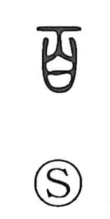

Explanation
百 adds a numerical mark above 白, which probably supplies the sound. In oracle-bone writing, one stroke gives one hundred, two strokes two hundred, and three strokes three hundred. The form combines a sound element with a visible count of hundreds.
Some early examples also contain a triangular mark that appears to indicate the nostrils, making their head-shape somewhat different from 白 alone. The head's internal mark and the upper numerical stroke perform different functions.
A hundred is a completed counting unit and readily represents a large total. 百 therefore extends to many, every kind, or the whole collection, as in expressions for the many officials or all the people. 佰 applies the same count to a group of a hundred persons.